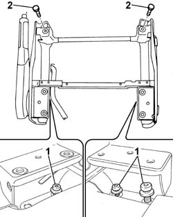

7045A06 DRIVER'S FRONT SEAT SUPPORT R.R. WITH SEAT REMOVED
- Path
- Procedures > 70 FITTINGS > 7045 FRONT SEATS > 7045A FRONT SEAT ASSEMBLY > 7045A06 DRIVER'S FRONT SEAT SUPPORT R.R. WITH SEAT REMOVED
- Kind
- repair procedure (removal / refitting; the operation number is the code)
- Applies to
- all engines; all production periods
- Interactive page
- https://sloeber94.github.io/elrnDB-fUlss/en/#/179007839
Applies to: all engines; all production periods
 Removing
Removing
 Refitting
Refitting